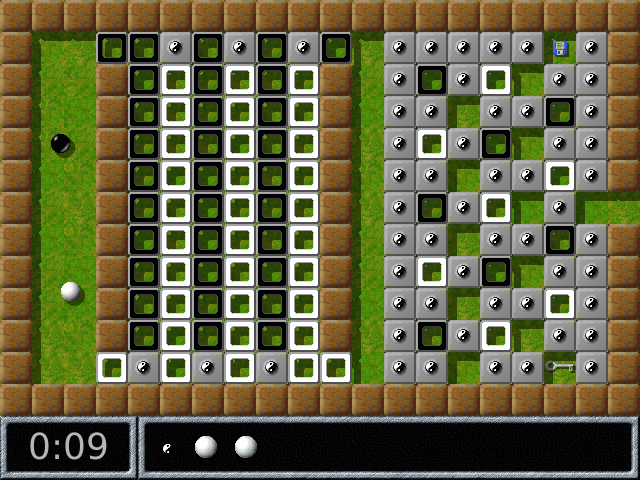
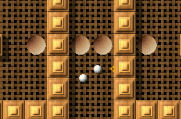

| [Top] | [Contents] | [Index] | [ ? ] |
Dieses Handbuch beschreibt die Installation und das Spielprinzip von Enigma. Es bezieht sich auf Enigma Version 1.00.
Copyright © 2003, 2004, 2005, 2006 Daniel Heck und Beitragende
Das Kopieren und Verteilen dieser Datei, mit oder ohne Änderungen, ist gestattet, unter der Voraussetzung, dass obiger Copyright-Vermerk und dieser Abschnitt erhalten bleiben.
| 1. Einleitung | Allgemeine Informationen über Enigma | |
| 2. Das Spiel | Spielprinzipien | |
| 3. Einige Spielobjekte | Beschreibung einiger Objekte im Spiel | |
| 4. Fortgeschrittene Themen | Weitere Features und Verwaltung | |
| 5. Tipps und Tricks | Tipps für einige schwierige Levels | |
| 6. Autoren und Danksagungen | Credits und `Thank You's |
| 1.1 Über Enigma | Einige Fakten über Enigma | |
| 1.2 Installation | Woher und wie installiert man Enigma | |
| 1.3 Verbreiten von Enigma | Geben Sie Kopien an Ihre Freunde weiter! |
Zu sagen, Enigma sei ein Rätselspiel, ist eine Untertreibung. Tatsächlich ist Enigma eine riesige Sammlung von Rätseln, jede seiner 550 einzigartigen Landschaften fordert die Intelligenz, Geschicklichkeit und wahre Willensstärke seines Spielers aufs Neue. Enigma ist einfach zu erlernen, herausfordernd zu spielen und schwer zu schlagen. Es ist für fast alle Altersklassen geeignet. Es enthält Hunderte von Landschaften (Leveln). Und als ob das noch nicht genug wäre, ist es zudem vollständig frei. Wenn Sie Puzzle- und Rätselspiele mögen, und eine ruhige Hand haben, wird Sie Enigma wahrscheinlich für Stunden nicht aus seinem Bann lassen.
Das Ziel des Spieles ist es, Paare identisch gefärbter `Oxydsteine' zu finden und aufzudecken. Einfaches Prinzip? Bestimmt. Einfach zu meistern? Sicherlich nicht! Versteckte Fallen, riesige Labyrinthe, Laserstrahlen und nicht zuletzt zahllose haarige Rätsel blockieren für gewöhnlich den direkten Weg zu den Oxydsteinen. Enigmas Spielobjekte (von denen Hunderte existieren, so dass keine Langeweile aufkommen kann) interagieren auf viele unerwartete Weisen, and da viele von ihnen den Gesetzen der Physik gehorchen (bzw. Enigmas spezieller Version der Physik), ist es nicht immer einfach, sie mit der Maus zu kontrollieren ....
Das ursprüngliche Ziel des Enigma-Projektes war es, den Geist der Oxyd-Spiele-Serie am Leben zu erhalten, nachdem ihr Verleger 2002 entschied, das Spielegeschäft zu verlassen. Fans dieses berühmten Spiels werden ihre Déjà-vus erleben. Aber über die Jahre hat Enigma auch die Ideen zahlloser weiterer berühmter Spiele in sich aufgenommen und ihnen seinen eigenen, ganz persönlichen Twist hinzugefügt.
Enigma gibt es für Windows, Mac OS X und die meisten Linux- und Unixversionen. Es wurde in viele Sprachen übersetzt, sogar dieses Handbuch ist in mehreren Sprachen erhältlich.
Die offizielle Homepage von Enigma versucht, die wichtigsten Informationen rund um Enigma zu sammeln: Hier finden Sie Bildschirmfotos, die aktuellsten Versionen, Informationen über die Weiterentwicklung von Enigma und außerdem die aktuellste Ausgabe dieses Handbuchs. Die Entwickler von Enigma können jederzeit unter der Email-Adresse enigma-devel@nongnu.org erreicht werden.
Enigma ist freie Software, d.h. Sie sind ausdrücklich dazu aufgefordert, möglichst viele Kopien an Ihre Freunde zu verteilen (see section Verbreiten von Enigma). Enigma wird von einer kleinen Gruppe von Freiwilligen entwickelt, und wir alle arbeiten in unserer Freizeit. Wenn Ihnen das Spiel gefällt, würden wir uns über eine kleine Email an die oben genannte Adresse sehr freuen, sozusagen als kleine Anerkennung und Belohnung für die unzähligen Stunden, die wir in Enigma investiert haben.
Die aktuellste Version von Enigma findet sich stets auf der offiziellen Download-Seite. Diese Seite stellt Pakete für die folgenden Betriebssysteme bereit:
Die Windows-Version von Enigma wird in Form eines einfachen Installationsprogrammes vertrieben, das Enigma auf Ihrem Computer einrichtet. Laden Sie bitte einfach die bereitgestellte Datei auf Ihren Computer und führen Sie sie aus, um die Installation zu starten.
Vorgefertigte Pakete existieren für einige verbreitete Linux-Distributionen wie SUSE, Redhat und Debian. Für andere Unix-ähnliche Betriebssysteme steht ist das Neukompilieren der Quellcodes sicher die einfachste Lösung.
Unter OS X ist keine Installation nötig; entpacken Sie einfach die bereitgestellt `.dmg' or `.tar.gz' und kopieren Sie die enthaltene Applikation an den von Ihnen gewünschten Ort.
Die Download-Seite enthält üblicherweise detailliertere und aktuellere Informationen (allerdings nur auf Englisch). Falls Sie Probleme haben, Enigma auf Ihrem Rechner zum Laufen zu bringen, zögern Sie bitte nicht, uns unter enigma-devel@nongnu.org um Unterstützung zu bitten.
Enigma ist freie Software und darf gemäß den Bedingungen der GNU General Public License (GPL) verbreitet werden. Die englische Fassung dieser Lizenz ist jeder Kopie von Enigma beigelegt, die Datei heißt entweder `COPYING' oder `COPYING.txt'. Für den Fall, dass Sie Enigma lediglich spielen wollen, müssen Sie die Lizenz eigentlich nicht studieren (Sie hätten es ja vermutlich ohnehin nicht getan). Für Sie besagt die Lizenz im Wesentlichen: Spielen Sie Enigma so viel Sie wollen, so lange Sie wollen und geben Sie auf jeden Fall allen Ihren Freunden eine Kopie!
Falls Sie dagegen Änderungen an Enigma vornehmen oder an der weiteren Entwicklung teilnehmen möchten, nehmen Sie sich bitte die Zeit, die Lizenz durchzulesen. Die GPL gewährleistet, dass Enigma auch in Zukunft freie Software bleiben wird und ohne zusätzliche Einschränkungen benutzt und verbreitet werden kann. Insbesondere müssen Derivate von Enigma unter sehr ähnlichen Lizenzbedingungen wie Enigma selbst verfügbar gemacht werden.
Die beiden vorstehenden Absätze sind kein Ersatz für die eigentliche Lizenz, lediglich eine Umschreibung ihrer Grundintention. Für Details konsultieren Sie bitte den originalen Lizenztext oder fragen Sie auf der Enigma-Mailingliste.
| 2.1 Ganz zu Anfang | Durch die Menüs navigieren und starten | |
| 2.2 Spielregeln | Wie man Enigma spielt | |
| 2.3 Steuerung | Tastatur und Mauskommandos |
Enigma präsentiert sich nach dem Starten mit einem kleinen Hauptmenü, von dem aus Sie ein neues Spiel starten, einige Einstellungen ändern oder das Spiel wieder verlassen können, sobald Sie genug haben. Die folgenden Abschnitte werden Ihnen einen kurzen Überblick über das Level-Menü und das Options-Menü geben, in der Hoffnung, dass sich der Rest von selbst erschließt. Zu den meisten Menüs kann man mit F1 eine Hilfe aufrufen. Die Begriffe "Level" und "Landschaft" werden synonym verwendet.
| 2.1.1 Das Level-Menü | Wähle die nächste Landschaft | |
| 2.1.2 Das Levelpaket-Menü | Bestimme ein Levelpaket | |
| 2.1.3 Einstellungen | Passe Enigma an | |
| 2.1.4 Der Level-Inspektor | Detailierte Informationen über eine Landschaft |
Wenn Sie im Hauptmenü den Eintrag "Spiel starten" anwählen, landen Sie im Level-Menü, das ungefähr folgendermaßen aussieht:
Der Bildschirm ist in drei Bereiche unterteilt: der obere Bereich enthält Informationen über den gerade angewählten Level und das aktuelle Levelpaket, der mittlere Bereich enthält eine Übersicht über alle verfügbaren Landschaften, und am unteren Bildschirmrand befindet sich eine Leiste mit Aktionsknöpfen.
Durch die Landschafts-Übersicht können Sie mithilfe der kleinen Pfeil-Knöpfe am rechten Rand oder mit den Pfeiltasten auf der Tastatur navigieren. Um ein neues Spiel zu starten, klicken Sie einfach auf das gewünschte Vorschaubildchen oder Sie drücken die Eingabetaste, um die momentan ausgewählte Landschaft zu starten.
Enigma verfügt über zwei Schwierigkeitsgrade: "einfach" und "normal". Um zwischen diesen umzuschalten, drücken Sie den mittleren Knopf in der untersten Zeile: Schalten Sie die Silbermedaille mit der Feder ein, wenn Sie einfachere Landschaften bevorzugen, oder die Goldmedaille für den normalen, schwierigeren Modus.
Nicht alle Landschaften besitzen eine vereinfachte Version; diejenigen, die eine besitzen, sind durch eine Feder gekennzeichnet (sofern Sie sie noch nicht gelöst haben) oder mit einem Silbermedaille in der oberen linken Ecke des Vorschaubilds.
Sie können zur nächsten Landschaft springen, indem Sie entweder F5 betätigen oder auf den >>|-Knopf in der untersten Zeile klicken. Die Bedeutung von "nächste Landschaft" hängt dabei davon ab, welchen Modus Sie im auf dem Knopf ganz links-unten eingestellt haben.
Eine Landschaft ist möglicherweise außerdem mit einem kleinen roten Dreieck mit Ausrufezeichen markiert: das Symbol signalisiert, dass die Landschaft aktualisiert wurde, seit Sie sie zuletzt gelöst haben. Sie sehen dies wahrscheinlich nur nach einem Update von Enigma.
Im Level-Menü können folgende Tastaturkürzel verwendet werden:
Rückkehr zum Hauptmenü
Hilfe
Zur nächsten Landschaft, entspricht dem >>|-Knopf
Auswahl einer Landschaft
Ausgewählte Landschaft spielen
Nächstes Landschaftspaket
Voriges Landschaftspaket
Enigma enthält bereits viele Landschaften. Sehr, sehr viele, um genau zu sein. Um etwas Ordnung hineinzubringen, wurden die Landschaften in "Levelpaketen" zusammengefasst. Und da mit jeder neuen Version von Enigma neue Landschaften hinzukamen, mussten wir inzwischen sogar die Levelpakete selber zu "Gruppen" zusammenfassen. Aber keine Sorge, es ist alles viel einfacher als es jetzt vielleicht klingt.
Um ein Levelpaket auszuwählen, wechseln Sie ins "Levelpaket"-Menü, in das Sie vom Hauptmenü oder vom Level-Menü aus kommen können.
In der linken Spalte sind die Gruppen aufgeführt, rechts die Levelpakete in der ausgewählten Gruppe. Die offiziellen, voreingestellten Gruppen von Enigma sind die folgenden:
Mit einem Linksklick können Sie eine Gruppe und dann ein Levelpaket auswählen.
Für eine weitere Beschreibung der Levelpakete lesen Sie bitte User-Levelpakete.
Das Optionsmenü ermöglichst es Ihnen, Enigma an Ihre Vorlieben anzupassen.
Wählen Sie hier die Sprache, in der die Nachrichten in den Menüs und (falls verfügbar) in den Leveln dargestellt werden.
Schaltet zwischen Vollbild- und Fensterdarstellung um. Sie können dazu auch das Tastenkürzel Alt-Eingabe verwenden, auch dann, wenn Sie sich nicht im Optionsmenü befinden. Hinweis: Auf einigen System wird diese Einstellung erst dann übernommen, wenn Sie ins Hauptmenü zurückkehren.
Benutzen Sie diesen Knopf um die Bildschirmauflösung zu wählen, die Enigma für die Darstellung verwendet. Diese Einstellung wird erst übernommen wenn Sie ins Hauptmenü zurückkehren.
Regeln Sie hier falls nötig die Helligkeit der Bildschirmdarstellung.
Stellen Sie hier ein, wie schnell Ihre Kugel beschleunigen soll wenn Sie die Maus bewegen. Während des Spiels können Sie dazu die linke/rechte Pfeiltaste verwenden.
Regeln Sie hier die Lautstärke von Klangeffekten im Spiel.
(Für Oxyd-Kenner.) Mit diesem Knopf können Sie das Klangschema wechseln, das Enigma während des Spiels verwendet. Nach Installation der Oxyd-Daten können Sie hier die originalen Soundeffekte einschalten.
Regeln Sie hier die Lautstärke der Hintergrundmusik im Menü.
Erlaubt das Umschalten zwischen Links-Rechts-Stereo, Rechts-Links-Stereo und Mono-Klang.
Auf der Einstellung `Auto' wird Enigma von Zeit zu Zeit versuchen, aktuelle Bewertungen herunterzuladen. Dies betrifft öffentliche Bewertungen, Weltrekorde, PAR-Zeiten etc. See section Ergebnisse hochladen.
Geben Sie hier den Namen oder Alias ein, der zusammen mit Ihren Ergebnissen angezeigt werden soll, wenn Sie enigma.score hochladen. See section Ergebnisse hochladen.
Das Verzeichnis, in dem Enigma die Nutzerdaten speichert. Details stehen im Referenzhandbuch.
Das Verzeichnis, in dem Enigma Nutzerbilder speichert. Details stehen im Referenzhandbuch.
Um genauere Details über eine Landschaft zu erfahren, können Sie mit einem Rechtsklick oder Kontroll-Klick auf das Vorschaubild einer Landschaft den Level-Inspektor aufrufen.
Hier können Sie Ihre Ergebnisse mit dem Weltrekord für diese Landschaft, mit dem Par und den Ergebnissen des Levelautors selber vergleichen. Es wird sogar eine Statistik dazu angezeigt, wieviele andere Spielere diese Landschaft bereits gelöst haben.
Neben weiteren Informationen, die im Referenz-Handbuch beschrieben werden, können Sie auch eine kurze Anmerkung zur Landschaft hinterlassen und sie bewerten.
Beachten Sie bitte, dass das Textfeld für die Anmerkung möglicherweise nur ASCII-Zeichen erlaubt, abhängig vom System, auf dem Enigma läuft. Vermeiden Sie also notfalls Umlaute, Akzente und Sonderzeichen.
Die Bewertung ganz links-unten ist Ihr persönlicher Eindruck von der Landschaft, den Sie durch einen Linksklick einstellen können. `-' steht dabei für keine Meinung, 0 für sehr schlecht, 5 ist Durchschnitt und 10 steht für die beste unter den guten Landschaften. Ihre Bewertung können Sie uns zusammen mit Ihren Ergebnissen zuschicken (see section Ergebnisse hochladen).
Schließlich können Sie den Level-Inspektor auch dazu verwenden, die Bildschirmphotos zu betrachten, die Sie während des Spielens dieser Landschaft aufgenommen haben (see section Steuerung).
| 2.2.1 Gewöhnliche Landschaften | ||
| 2.2.2 Zwei-Spieler Landschaften | ||
| 2.2.3 Meditations-Landschaften |
Um Verwirrungen vorzubeugen: Die Begriffe "Level" und "Landschaft" werden synonym verwendet.
Die grundlegende Idee hinter Enigma ist recht einfach: In den meisten Landschaften steuern Sie eine kleine schwarze Kugel, und Ihr Ziel ist es, identische Paare sogenannter Oxyd-Steine zu finden und zu öffnen. Geschlossene Oxyd-Steine sehen folgendermaßen aus (es gibt insgesamt vier äußerlich verschiedene Varianten, die sich aber alle gleich verhalten):

Berühren Sie einen Oxyd-Stein mit Ihrer Kugel, dann öffnet er sich und zeigt ein blinkendes farbiges Symbol. Je zwei Oxyd-Steine in jeder Landschaft tragen dasselbe Symbol. Diese Paare gilt es zu finden und direkt hintereinander zu berühren, damit sie permantent geöffnet bleiben--stimmen die Symbole nicht überein, schließt sich der erste Oxyd-Stein wieder. Eine Landschaft gilt als gelöst, sobald Sie alle Paare von Oxyd-Steinen gefunden und geöffnet haben. In der folgenden Abbildung sehen Sie ein Paar von grünen Oxyd-Steinen, das bereits geöffnet wurde. Das Fragezeichen im blauen Oxyd-Stein signalisiert, dass das zweite blaue Symbol noch irgendwo versteckt ist.

Übrigens: falls Sie es noch nicht getan haben, ist jetzt ein guter Zeitpunkt, Enigma einmal zu starten und die ersten paar Landschaften auszuprobieren!
Sie können auf dem Boden liegende Objekte aufsammeln, indem Sie einfach darüber rollen. Das Inventar am unteren Rand des Bildschirms zeigt alle Gegenstände an, die sich gerade in Ihrem Besitz befinden. Zu Beginn des Spiels sind Sie lediglich mit zwei Ersatzkugeln ausgerüstet. Die folgende Abbildung zeigt ein Inventar, das bereits eine Schaufel, ein Stück Papier, zwei Stangen Dynamit, Ihre Ersatzleben und einen Regenschirm enthält:

Das Objekt, das sich ganz links im Inventar befindet, kann durch Drücken der linken Maustaste benutzt werden: damit legen Sie es entweder auf dem Boden ab oder Sie aktivieren das Objekt. Dynamit beginnt beispielsweise zu brennen, wenn Sie es ablegen, und Sprungfedern bewirken, dass Ihre Kugel in die Luft hüpft. Mit der rechten Maustaste oder dem Mausrad können Sie die Einträge im Inventar umordnen.
Möchten Sie einmal (aus welchem Grund auch immer) keine Objekte einsammeln, halten Sie einfach eine der Maustasten gedrückt, während Sie die Kugel bewegen. In einigen Situationen werden Sie das vielleicht hilfreich finden.
Viele Steine lassen sich verschieben, wenn man sie nur kräftig genug anschubst. Einer der nützlichsten beweglichen Steine ist der Holzstein, der etwa dazu verwendet werden kann, Brücken über Wasser und Abgründe zu errichten. Das folgende Bild zeigt, wie man eine Brücke baut, indem man Holzsteine ins Wasser hineinschiebt:

Häufig interagieren Spielobjekte auf überraschende Weise: Gegenstände, die auf dem Boden liegen können beispielsweise mit Laserstrahlen oder beweglichen Steinen transformiert werden. Und viele Steine verhalten sich bei Berührung anders als normal wenn Sie bestimmte Gegenstände im ersten Eintrag Ihres Inventars haben (der Zauberstab ist der berühmteste Vertreter dieser Gattung).
Eine letzte Bemerkung: Fühlen Sie sich nicht gleich entmutigt durch die scheinbare Komplexität des Spiels--die genaue Verhaltensweise der meisten Objekte wird im Laufe der Zeit klar werden. Einige der merkwürdigeren Objekte werden außerdem in Einige Spielobjekte näher vorgestellt..
Zunächst eine schlechte Nachricht: Bislang unterstützt Enigma noch keine Spiele über lokale Netzwerke oder das Internet. In dieser Hinsicht sind also Zwei-Spieler Landschaften in Wirklichkeit Ein-Spieler Landschaften, in denen Sie zwischen zwei Kugeln hin- und herschalten können: die schwarze Kugel kennen Sie bereits, und eine zusätzliche weiße Kugel.

Zwei-Spieler Landschaften können Sie an dem kleinen Yin-Yang Symbol in Ihrem Inventar erkennen. Wenn Sie dieses Objekt aktivieren, können Sie die Mauskontrolle auf die weiße bzw. wieder zurück auf die schwarze Kugel legen.
Die sogenannten Meditationslandschaften unterscheiden sich im Spielprinzip deutlich von gewöhnlichen Landschaften: hier besteht Ihre Aufgabe nicht darin, passende Paare von Oxyd-Steinen zu finden, sondern darin, eine Anzahl kleiner weißer Kugeln in Vertiefungen im Boden zu befördern. Die Landschaft gilt als gelöst, sobald alle Kugeln in je einer Mulde liegen und sich nicht mehr bewegen.

Aber seien Sie vorsichtig: Alle Kugeln bewegen sich gleichzeitig und eine ruckartige Mausbewegung kann einige der Kugeln wieder aus Ihren Vertiefungen herausschubsen. Meditationslandschaften erfordern gewöhnlich ein sehr ruhiges Händchen und eine ordentliche Portion Geduld (sie heiß nicht umsonst Meditationslandschaften!).
Folgende Tabelle gibt einen Überblick über die Tastenbelegung im Spiel. Sie müssen sich diese Liste nicht einprägen--sie kann während des Spiels jederzeit mit der F1-Taste abgerufen werden.
Benutze den ersten Gegenstand im Inventar
Sortiere die Gegenstände im Inventar um
Zeige das Spielmenü
Zeige den Hilfebildschirm
Zerstöre die momentane Kugel
Starte die Landschaft von Neuem
Gehe zur nächsten Landschaft
Gehe zur nächsten ungelösten Landschaft
Erzeuge ein Bildschirmfoto
Verringere Mausgeschwindigkeit
Erhöhe Mausgeschwindigkeit
Zwischen Vollbild- und Fensterdarstellung umschalten (funktioniert nicht auf allen Systemen, notfalls kann das Einstellungsmenü verwendet werden)
Kehre zurück zum Landschaftsmenü
Es gibt Dutzende verschiedener Spielobjekte, die Sie in Enigmas Landschaften kennenlernen werden. Hier wollen wir nur eine kleine Auswahl davon beschreiben, auf die Sie vielleicht häufiger treffen werden. Wenn das Spielprinzip von Enigma für Sie neu ist, wollen Sie vielleicht zuerst mit den Tutoriallandschaften beginnen? Starten Sie dafür einfach Enigma, wählen Sie "Levelpaket" dann den Knopf "Enigma" ganz links-oben, dann "Tutorial" auf der rechten Seite. Beginnen Sie mit der ersten Level "Oxyd Stones 1". Das Tutorial zeigt Ihnen die wichtigsten Spielobjekte und -ideen, und zum Üben einige der einfacheren Landschaften aus Enigmas Levelpaketen.
| 3.1 Gegenstände | ||
| 3.2 Steine |
| 3.1.1 Sprengstoffe | ||
| 3.1.2 Regenschirme | ||
| 3.1.3 Fähnchen |

In Enigma werden Sie im Laufe der Zeit über drei verschiedene Arten von Sprengstoff stolpern. Am harmlosesten ist die Dynamitstange, mit der Sie zwar nur geringen direkten Schaden anrichten können, die sich aber hervorragend als Zünder für naheliegenede Bomben eignen.
Schwarze Bomben haben genügend Sprengladung, um tiefe Löcher in die meisten Bodentypen zu reißen und etwaige anliegende Gegenstände zu zerstören. Für die meisten Zerstörungsarbeiten sind sie daher das Mittel der Wahl. Weiße Bomben haben die kombinierte Sprengladung von fünf schwarzen Bomben--bringen Sie ihre Kugel auf sichere Distanz wenn Sie eine von ihnen brennen sehen!
Benutzen Sie Schirme, um ihre Kugel für kurze Zeit (10 Sekunden um genau zu sein) unverwundbar zu machen. Solange wie ein Schirm aktiv ist, wird ein weißer blinkender Ring um Ihre Kugel herum angezeigt. Sobald der Halo anfängt zu flackern ist Eile angesagt: Ihnen bleiben dann nur noch 3 Sekunden, um Ihre Kugel in sicheres Terrain zu manövrieren.

Fahnen sind insbesondere auf langen und gefährlichen Reisen hilfreiche Begleiter. Wenn Ihre Kugel unterwegs zu Bruch geht, können Sie die Landschaft dort fortsetzen, wo Sie zuletzt ein Fähnchen abgelegt haben, und müssen nicht noch einmal ganz am Anfang starten. Es existieren zwei verschiedene Fahnen: eine schwarze und eine weiße, die jeweils die Startposition der schwarzen oder weißen Kugel festlegen.
| 3.2.1 Tödliche Steine | ||
| 3.2.2 Wechselsteine | ||
| 3.2.3 Spiegel | ||
| 3.2.4 Einbahn-Steine | ||
| 3.2.5 Shogunsteine | ||
| 3.2.6 Bolder-Steine | ||
| 3.2.7 Puzzle-Steine | ||
| 3.2.8 Poststeine |

Um zwei Steinarten sollten Sie auf jeden Fall einen möglichst großen Bogen schlagen, zumindest solange Sie keinen Schirm haben, um Ihre kostbare Kugel zu schützen.
Der Totenkopfstein ist genauso ungesund wie er aussieht; schon die erste Berührung ist tödlich. Im Ernst, wir haben Sie gewarnt. Vom Totenkopfstein gibt es auch noch eine besonders hinterhältige unsichtbare Variante, also stecken Sie auf jeden Fall Ihre Zauberbrille ein.
Der schwarze Ritter bewacht oftmals wichtige Durchgänge, und gewöhnlich hat er kein gesteigertes Interesse, sie passieren zu lassen. Bringen Sie ein gutes Argument mit, mit dem sie ihn "überzeugen" können.
Wechselsteine bewegen sich nicht einfach auf das nächstgelegene Feld wenn sie geschoben werden. Stattdessen tauschen sie ihren Platz mit demjenigen Stein, in den sie hineingeschoben werden. Auf ein leeres Feld kann so ein Stein gar nicht geschoben werden--die einzige Möglichkeit, ihn von A nach B zu befördern ist also, ihn wiederholt mit "normalen" Steinchen zu vertauschen.

Laserstrahlen können mithilfe der verschiedenen Spiegel umgelenkt oder aufgespalten werden. Es gibt in Enigma zwei grundsätzliche Typen von Spiegeln: planare Spiegel und dreieckige Spiegel. Ein planarer Spiegel verhählt sich so, wie man es erwartet: Ein auftreffender Laserstrahl wird reflektiert wenn er senkrecht zum Spiegel steht und er wird nach links oder recht abgelenkt wenn er den Spiegel in einem Winkel von 45 Grad trifft.
Dreieckige Spiegel sind etwas kniffliger: Seine drei Seitenflächen verhalten sich wie gewöhnliche Spiegel, indem sie einen eintreffenden Lichstrahl entweder zurückwerfen oder umlenken. Fällt ein Strahl allerdings auf die Spitze des Dreiecks, teilt er sich in zwei Strahlen auf, die den Spiegel in entgegengesetzter Richtung verlassen.
Beide Spiegeltypen gibt es außerdem in halbtransparenter und verschiebbarer Variante. Halbtransparente Spiegel lenken einen einkommenden Strahl zur Hälfte um, lassen die andere Hälfte allerdings unverändert passieren. Verschiebbare Spiegel sind auf einem hellgrauen Stein befestigt, unbewegliche auf einem dunkelgrauen Stein.
Die Ausrichtung eines Spiegels kann geändert werden, indem man ihn leicht mit einer Kugel berührt. Aber passen Sie auf bei Spiegeln, die bereits im Strahlengang eines Lasers stehen: eine unbedachte Änderung kann Sie schnell das Leben einer Kugel kosten!

Man kann diese Steine nur in einer Richtung passieren. Ganze Labyrinthe können aus ihnen gebaut werden, aber meistens zwingen sie Sie einfach nur dazu, einen Teil der Landschaft zu beenden, bevor Sie zum nächsten Teil übergehen.
Sie haben Probleme mit Einbahn-Steinen, die Ihnen den Weg blockieren? Vielleicht kann Ihnen ein magischer Gegenstand helfen ....

In einigen Landschaften werden Ihnen blinkende blaue Punkte auf dem Boden begegnen. Diese können mit der richtigen Kombination von Shogunsteinen aktiviert werden, wobei sie dann üblicherweise etwas Sinnvolles tun und z.B. eine Tür öffnen oder einen Laser ein- oder ausschalten.
Ein kleiner blinkender Punkt wird aktiviert, indem man einen Shogunstein mit einem kleinen Loch auf den Punkt schiebt. Um die größeren Punkte zu aktivieren benötigen Sie mehrere Shogunsteine, die Sie passend stapeln müssen. Um etwa einen mittelgrößen Punkt zu aktivieren müssen Sie erst einen Shogunstein mit mittelgroßem Loch auf den Punkt schieben und dann noch einen Shogunstein mit kleinem Loch in den größeren hineinschieben. Bei großen blinkenden Punkten verhählt es sich entsprechend.
Bolder-Steine bewegen sich in die Richtung, die durch den Pfeil auf ihnen angezeigt wird; solange, bis sie auf einen anderen Stein stoßen. Vielleicht blockieren die Bolder-Steine Ihren Weg, und Sie müssen sie auf die eine oder andere Weise loswerden. Aber stellen Sie Ihre Kugel niemals, niemals direkt vor einen Bolder-Stein, wenn er auf sie zukommt, weil er Ihre Kugel zerschlagen wird, wenn er sie überrollt!
Allerdings können Sie sich die Bolder-Steine auch zu Nutze machen, denn sie sind in der Lage, Oxydsteine zu öffnen, wenn sie in sie hineinlaufen. Und mit verschiedenen Hilfsmitteln können Sie die Bolder-Steine auch gezielt umlenken ....
Puzzlesteine verdanken ihren Namen der Tatsache, dass einzelne Steine dieser Gattung zusammengesteckt werden können wie die Teile eines Puzzles. Puzzlesteine haben an einigen oder allen ihrer vier Seiten Anschlüsse mit denen sie an benachbarte Puzzlesteine andocken können. Sobald Puzzlesteine auf diese Weise zusammengefügt sind, bewegen sie sich zusammen als ein großer Puzzlestein. Diese großen Blöcke können Sie z.B. verwenden, um sichere Wege über Abgründe oder Wasser zu konstruieren.
Puzzlesteine ändern ihr Verhalten wenn man sie mit einem Zauberstab berührt. Ist der berührte Puzzlestein vollständig verbunden, besitzt er also keine offenen Anschlüsse mehr, beginnt er augenblicklich zu explodieren, Stein für Stein. Existieren noch offene Anschlüsse, verschiebt die Berührung mit dem Zauberstab alle Steine innerhalb einer Zeile oder Spalte des Puzzlesteins um eine Stelle. Am besten, Sie probieren das einfach mal aus.
Berichten zufolge existiert noch eine seltene Abart des gewöhnlichen Puzzlesteins. Man findet ihre Vertreter hauptsächlich in den Landschaften von Oxyd 1 an, und man erkennt sie daran, dass sie orangefarbene und nicht blaue Verbindungsrohre besitzen. Diese Puzzlesteine lassen sich nicht verschieben und man muss keinen Zauberstab benutzen, um Zeilen und Spalten umzuordnen oder die Steine zum explodieren zu bringen.

Poststeine dienen dazu, Gegenstände aus Ihrem Inventar an einen anderen Ort in der Landschaft zu transportieren. Wenn Sie einen Poststein berühren, wird der erste Gegenstand aus Ihrem Inventar entfernt und an das Ende des Rohrsystems transportiert, das an den Poststein angeschlossen ist. In den meisten Fällen müssen Sie dieses Rohrsystem erst einmal selbst zusammenbauen, etwa indem Sie die einzelnen Stücke des Rohres nacheinander "verschicken".
Vorsicht: Poststeine funktionieren nicht mehr, sobald bereits ein Gegenstand am Ende des Rohres liegt. Wenn man nicht aufpasst, kann es leicht passieren, dass man irrtümlich ein falsches Objekt verschickt, das danach den Postweg versperrt!
| 4.1 User-Levelpakete | History, Search Results and Auto | |
| 4.2 Backups | What to backup for security | |
| 4.3 Ergebnisse hochladen | Let the world know your success | |
| 4.4 Enigma updaten | Keeping scores and levels on an update |
Das Levelpaket-Menü erlaubt einige weitere Möglichkeiten. Die `User'-Gruppe enthält drei anfangs leere Levelpakete: `Auto Folder', `History' und `Search Result'.
Durch einen Klick auf den `Suchen'-Knopf im Levelpaket-Menü können Sie unter allen Landschaften nach Stichwörtern suchen. Bewegen Sie einfach die Maus auf das erscheinende Textfeld und geben Sie das Stichwort ein, es kann sich auf den Autor, Titel und auch den Dateinamen beziehen. Groß- und Kleinschreibung wird dabei nicht beachtet. Wenn Sie beispielsweise nach "jump" suchen, werden Ihnen daraufhin im Levelpaket `Search Results' alle Landschaften mit diesem Stichwort angezeigt, beispielsweise "Jump!", "No Jumping Necessary" und "Jump Pads".
Das Levelpaket `History' enthält Querverweise auf die von Ihnen zuletzt gespielten Landschaft. Es kann von Vorteil sein, wenn Sie nach einer Landschaft suchen, zu der Ihnen aber kein Suchwort einfällt.
`Auto Folder' ist ein Levelpaket, dem Sie sehr einfach neue Landschaften hinzufügen können, beispielsweise Landschaften, die Sie aus dem Internet heruntergeladen oder selber erstellt haben. Kopieren Sie dafür die Leveldatei in das Unterverzeichnis `levels/auto' im `Userpfad'-Verzeichnis, wie es unter Einstellungen angezeigt wird. Dieses Verzeichnis wird bei jedem Neustart von Enigma durchsucht und die Landschaften dem Levelpaket `Auto Folder' hinzugefügt.
Enigma bietet noch eine Reihe weiterer nützlicher Features, die über den Rahmen dieses Handbuchs hinausgehen. Sie können aber alle Details hierzu im Referenz-Handbuch nachlesen.
Wenn Sie befürchten, Ihre Spielergebnisse durch einen Festplatten-Fehler zu verlieren, oder einfach nur auf einen anderen Rechner übertragen möchten, sollten Sie wissen, wie man ein Backup von Enigma macht: Im Einstellungen-Menü finden Sie unter dem Eintrag `Userpfad' das aktuelle Verzeichnis, in dem auch Ihre Spielergebnisse abgespeichert werden. Sie können das gesamte Verzeichnis sichern, oder nur die für die Ergebnisse wichtigen Dateien `enigma.score' und `state.xml'.
Um Ihre Spielergebnisse registrieren zu lassen, schicken Sie uns bitte die Datei `enigma.score' aus dem `Userpfad'-Verzeichnis. Details finden Sie auf unserer Projekthomepage.
Um automatisch die aktuellste Weltrekordliste herunterzuladen, aktivieren Sie einfach die Option `Update Bewertungen' im Einstellungen-Menü.
Sofern Sie Ihre alte Enigma-Version nicht persönlich angepasst haben, deinstallieren Sie die alte Version einfach und installieren danach die neue. Ihre Ergebnisse werden dabei automatisch übernommen.
Falls Sie dagegen selber Landschaften den Installationsverzeichnissen von Enigma hinzugefügt hatten, sollten Sie sie vor der Deinstallation sichern. Danach können Sie sicher die alte Version deinstallieren und die neue installieren.
Die alte Ergebnisse werden beim ersten Start von Enigma automatisch übernommen (`~/.enigmarc2' auf Systemen mit `HOME'-Umgebungsvariable bzw. `.../Application Data/enigmarc.lua2' auf einigen Windows-Systemen). Sie können die alten Dateien folglich nach dem ersten erfolgreichen Starten von Enigma 1.00 löschen.
Falls Sie Landschaften aus Ihrer alten Version nach Enigma 1.00 übernehmen möchten, konsultieren Sie bitte das Referenz-Handbuch, da sich das Levelformat verändert hat.
Dieses Kapitel enthält Tipps für einige der etwas schwierigeren Landschaften in Enigma. Lesen Sie diese Hinweise bitte nur dann, wenn Sie wirklich verzweifelt sind und nicht mehr weiter wissen. Einige Landschaften sind absichtlich schwer und selbst Enigma-Veteranen benötigen Stunden um sie zu knacken. Einige Landschaften lassen sich im einfachen Spielmodus (see section Das Level-Menü) leichter lösen.
| 5.1 Tutorial | Komplettlösung für `Advanced Tutorial' | |
| 5.2 Tipps | Hinweise für einige Landschaften |
Die Landschaften aus dem "Tutorial"-Levelpaket sind normalerweise einfach. Eine Ausnahme bildet die letzte Landschaft, welche deutlich schwerer ist .... Dieser Teil des Handbuchs wurde von Jacob Scott beigetragen.
Diese Schritt-für-Schritt Anleitung ist für die Landschaft "Advanced Tutorial" im "Tutorial" Levelpack. Während Sie spielen, sollten Sie alle Dokumente eines Raumes so früh wie möglich lesen.
Das Ziel in dieser Landschaft ist es, wie in den meisten Landschaften in Enigma, die "Oxydsteine" zu finden und mit der schwarzen Kugel zu öffnen. Wenn Sie einen Oxydstein berühren, öffnet er sich und zeigt eine Farbe. Wenn Sie nacheinander zwei Oxydsteine mit der gleichen Farbe öffnen, bleiben sie beide offen. Sobald Sie alle Oxydsteine einer Landschaft in dieser Art geöffnet haben, haben Sie die Landschaft geschafft.
Diese Landschaft hat etwa zwanzig Räume, unterteilt in drei Gebiete. Im ersten Gebiet werden Sie den grundlegenden Steinen und Bodentypen der Enigmalandschaften begegnen und einige einfache Rätsel lösen. Das zweite Gebiet ist etwas anspruchsvoller und Sie werden eine nützliche Technik kennen lernen, um bewegliche Feinde zu kontrollieren. Das dritte und letzte Gebiet lässt Sie mit komplizierteren Interaktionen zwischen den Spielobjekten experimentieren. In dieser speziellen Landschaft sind alle Oxydsteine in einem einzigen Raum am Ende des dritten Gebiets untergebracht.
Sie starten in einem Raum, der von unbeweglichen Wandsteinen umgeben ist. Eine kleine Lücke rechts, etwas Wasser unten links und eine geschlossene Tür oben rechts sind die einzigen Ausnahmen.
Raum 1: Gehen Sie durch die Lücke in der rechten Wand.
Raum 2: Meiden Sie einfach die Steine mit den Totenköpfen.
Raum 3: Schieben Sie vier Holzkisten, eine nach der anderen, in einer Reihe ins Wasser, um eine Brücke zu bauen. Schieben Sie jetzt die grauen Blöcke ins Wasser. Nun schaffen Sie die braunen Blöcke aus dem Weg (etwa nach links) und bauen mit zwei Holzkisten eine Brücke nach rechts.
Raum 4: Gehen Sie nahe an den Kreisel heran. Wenn er beginnt, Sie zu jagen, locken Sie ihn nach links, um die Steine in der Mitte herum. Sobald der Kreisel weit genug vom Durchgang in den nächsten Raum entfernt ist, rennen Sie hindurch.
Raum 5: Die einzige Gefahr sind die Totenköpfe am unteren Ende des Raumes. Der erste Boden besteht aus Metall--dieser Boden ist ähnlich dem "Laubboden", auf dem Sie bisher gegangen sind. Der nächste Boden ist "Rot"--es ist nicht ganz einfach um darauf zu bremsen oder zu beschleunigen. Der dritte Boden besteht aus Eis--Sie haben darauf sehr wenig Reibung. Der letzte Boden ist Weltall--hier gibt es keine Reibung; Sie können darauf weder ihre Geschwindigkeit noch ihre Laufrichtung ändern.
Raum 6: Überqueren Sie einfach die schrägen Abhänge. Dann gehen Sie nach links heraus über den so genannten "Invers"-Boden--wenn Sie auf diesem Boden sind und die Maus (oder ein ähnliches Gerät) in eine Richtung bewegen, wird die Kugel sich in die entgegengesetzte Richtung bewegen. (Wenn Sie hiermit Probleme haben, versuchen Sie Ihre Maus um 180 Grad zu drehen).
Raum 7: Versuchen Sie ein Extraleben zu bekommen, indem Sie den Klotz auf den unteren Schalter bewegen. Schieben Sie ihn zuerst ein Feld nach oben, dann sechs Felder nach links, fünf nach unten und zwei nach rechts. Schlussendlich noch ein Feld nach oben und eines nach links. Holen Sie dann das Extraleben und schieben Sie den Block auf den anderen Schalter um die Tür in den nächsten Raum zu öffnen.
Raum 8: Nehmen Sie das Dynamit (dazu müssen Sie auf das Eis gehen) und legen Sie es vor die gelblichen Blöcke um sie zu sprengen und so einen Durchgang zu erhalten. Der Spaten hat hier keinen Zweck, aber Sie sollten seine Funktionsweise trotzdem kennen.
Raum 9: Stoßen Sie den untersten verschiebbaren Block nach links. Nun versperren die Bolder, die nach rechts drängen, Ihren Weg. Stoßen Sie den beweglichen Klotz ganz rechts (nach links oder nach rechts) um die Bolder vorbeigehen zu lassen. Nehmen Sie den Zauberstab (berühren Sie nicht unvorsichtigerweise einen Bolder, wenn der Stab an vorderster Stelle in Ihrem Inventar ist) und schieben Sie den beweglichen Block oben ins Wasser. Nun gehen Sie wieder nach rechts und nehmen den Zauberstab an die erste Stelle Ihren Inventars und berühren die ersten drei Bolder der langen Reihe (Passen Sei auf, um nicht von Boldern überrannt zu werden). Schieben Sie den beweglichen Block ganz links nach links und gehen Sie in den nächsten Raum.
Raum 10: Betätigen Sie den Schalter. Nun schieben Sie die braunen Klötze nach oben (je ein Feld). Schieben Sie die mittlere (von unten nach oben) Holzkiste nach links, und diejenige rechts darüber ins Wasser. Schieben Sie die restlichen Holzkisten in der gleichen Reihe ins Wasser (Aufpassen, nicht ertrinken!). Nun schlagen Sie das Fenster (die blaue Linie) mit großer Geschwindigkeit ein. Nehmen Sie das Extraleben und gehen Sie über die Brücke nach oben in den ersten Raum und dann durch die offene Tür nach oben.
Im zweiten Gebiet werden Sie einen Rotor antreffen. Das ist ein beweglicher Feind Ihrer schwarzen Kugel. Verschiedene Rotoren können sich unterschiedlich verhalten, aber sie sind nie sehr intelligent. Die Lösung, um an ihnen vorbei zu kommen ist, sie so auszutricksen, dass sie das tun, was Sie wollen; dabei müssen Sie versuchen, sich möglichst aus der Gefahr heraus zu halten.
Schauen Sie sich hier etwas um, aber fassen sie den beweglichen Block noch nicht an. Sie müssen durch diese drei geschlossenen Türen da oben gehen.
Erste Tür: Schieben Sie die weiße Kugel nach links aus der Sackgasse heraus (aber gehen Sie dabei noch nicht durch den Einbahnblock). Das wird vielleicht einige Versuche brauchen. Nehmen Sie den Löffel auf und stoßen Sie die weiße Kugel durch den weißen Einbahnblock, aber fest genug, dass sie nicht darunter stecken bleibt. Nun gehen Sie durch den schwarzen Einbahnblock und schieben die weiße Kugel den Weg entlang. Stoßen Sie die weiße Kugel durch den nächsten Einbahnblock, auch hier möglichst fest. Sobald die weiße Kugel hindurch ist und den Abhang hinunter rollt, benutzen Sie den Löffel; Sie beginnen am Anfang der Landschaft neu und sind nicht länger gefangen. Gehen Sie nun wieder in den oberen Raum--die erste Tür ist jetzt offen.
Zweite Tür: Schieben sie den beweglichen Block im Raum ganz rechts nach rechts und rennen Sie schnell weg. Ein Dokument mit nützlichen Informationen liegt nun in der Tür zwischen Gebiet 1 und 2. Locken Sie den Rotor (indem Sie ihn dazu bringen Sie zu jagen, so wie Sie es mit dem Kreisel getan haben) über die Mauer rechts der Türe, die die beiden Gebiete verbindet. Rennen Sie durch die Tür und über die Brücke in den Raum unter Ihnen. Betätigen Sie den Schalter, um die Tür zu schließen und gehen Sie dann in den Raum, in dem Sie ursprünglich starteten. Sie werden den Rotor nicht länger sehen--er kann nicht in den Raum kommen, in dem Sie gerade jetzt sind--aber wenn Sie genau hinschauen, werden Sie sehen, wo er etwa ist. Das Ziel ist es hier, ohne sich selbst in Gefahr zu begeben, den Rotor auf einen Schalter zu bringen, so, dass er eine Türe für Sie öffnet. Bringen Sie ihn dazu, Ihnen von oben rechts nach oben links zu folgen. Er sollte von einigen Abhängen nach links geschoben werden. Bringen Sie ihn links nach unten, bis er nicht mehr weiter kann und Sie den Ton eines Schalter hören. betätigen Sie den Schalter unten an der Brücken und gehen Sie zurück in das Gebiet zwei. Die zweite Türe ist nun offen.
Dritte Tür: Schieben Sie den beweglichen Block, unter dem der Rotor sich versteckt hatte auf den Schalter in der Nähe. Gehen Sie nach links--die dritte Tür ist jetzt auch offen. Gehen Sie durch diese drei Türen.
In Gebiet drei müssen Sie die Interaktion zwischen verschiedenen Objekten von Enigma näher untersuchen. Hier werden sie Laser, Spiegel und Münzen finden. Sie werden ein einfaches Laser-Spiegel Problem lösen müssen, um den Laser auf einen bestimmten Stein zu lenken, welcher eine Brücke in den nächsten Raum schließen wird. Um durch die nächsten Räume zu kommen, müssen Sie einige neue Gegenstände erschaffen, indem sie den Laser auf gewisse, bereits vorhandene, Dinge lenken.
Im ersten Teil von Gebiet drei sind drei Spiegel, ein Laser und ein Schalter vorhanden.
Raum 1: Sie müssen den Laser auf den schwarzen Stein umlenken. Stoßen Sie den Spiegel links unten ein Feld nach unten (er sollte nun genau 30 Felder direkt links vom Laser stehen) und richten Sie ihn so aus, dass er wie ein "\" aussieht; dies machen Sie, indem Sie ihn vorsichtig berühren. Schieben Sie den Spiegel links oben acht Felder nach links und ein Feld nach unten (er sollte jetzt genau vier Felder über dem anderen Spiegel stehen) und richten Sie ihn so aus, dass er wie ein "/" aussieht. Schieben Sie den Spiegel rechts oben zwei Felder nach oben und drei nach rechts (er sollte nun 28 Felder rechts vom letzten Spiegel und ein Feld unter dem schwarzen Stein stehen). Richten Sie ihn so aus: "/". Schalten Sie nun den Laser an, indem Sie den Schalter betätigen; meiden Sie den Strahl! Gehen Sie nun über die Brücke nach rechts.
Raum 2: Nehmen Sie einige Münzen mit und gehen Sie zurück in den vorigen Raum. Bestrahlen Sie eine der Münzen mit dem Laser, indem Sie ihn an- und abschalten. Nehmen Sie das umgewandelte Objekt (einen Regenschirm), und wiederholen Sie den Prozess mindestens ein weiteres Mal. Legen Sie nun eine Münze neben einen Spiegel und schieben Sie ihn darüber. Bestrahlen Sie auch diese Münze mit einem Wert von 5, um einen Hammer zu erzeugen. Bestrahlen Sie den Hammer (indem Sie den Laser nochmals aus- und einschalten), um ein Schwert zu erzeugen. Falls Sie mehr Extraleben wollen, schieben Sie einen Spiegel zwei Mal über eine Münze und bestrahlen Sie diese Münze mit einem Wert von 10 (dem maximal möglichen) mit dem Laser. Um in den Raum mit den Rittern zurück zu kommen, richten Sie die Spiegel wieder wie vorhin aus, entfernen Sie alle Objekte, die den Strahl blockieren könnten und schalten Sie den Laser ein. Benutzen Sie nun die rechte Maustaste oder die "Tab"-Taste um das Schwert an die erste Stelle (ganz nach links) in Ihrem Inventar zu bekommen. Kämpfen Sie mit den Rittern (schlagen Sie sie jeweils 4 Mal), um einen Durchgang zu bekommen.
Raum 3: Benutzen Sie einen Regenschirm, um über den Abgrund nach unten zu fliegen und dann in den Raum rechts hinein zu gehen. Wenn der Ring um Ihre Kugel zu blinken beginnt, ist die Wirkung bald vorbei, benutzen Sie rechtzeitig einen weiteren Regenschirm.
Raum 4: Öffnen Sie einfach alle Oxydsteine in der richtigen Reihenfolge, so dass jeweils gleichfarbige geöffnet bleiben. Vermeiden Sie es, die Furzsteine zu berühren. Sie haben die Landschaft nun geschafft!
Die Nachricht in der oberen rechten Ecke enthält eine wichtige Nachricht.
Schieben Sie den ersten Shogunstein in die linke obere Ecke und den zweiten in das Feld über dem am weitesten rechts gelegenen Punkt.
Nutzen Sie die Holzsteine, falls Sie den Überblick verlieren.
Haben Sie schonmal daran gedacht, Ihre Maus umzudrehen???
Erinnern Sie sich? Die erste Lagerhalle im originalen Sokoban sah genauso aus … So schwierig kann es also nicht sein!
Schieben Sie zwei der Spiegel an den oberen und einen an den unteren Rand. Wenn Sie die Spiegel geeignet verschieben und sorgfältig zielen, können Sie alle Oxyd-Steine mit dem Laser erreichen.
Einer der blauen Punkte verhält sich anders als die anderen. Nutzen Sie das aus!
Richten Sie die Kugeln horizontal aus.
Klopfen Sie an den Wänden.
Sie haben alle Türen geöffnet und kommen immer noch nicht durch? Sie scheinen etwas übersehen zu haben!
Kennen Sie das Dreikörperproblem?
Lernen Sie aus "Easy Shifting ....".
Lernen Sie aus "Running Rings".
Erstens, suchen Sie zunächst die Diskette und den Zauberstab, Sie werden sie benötigen. Zweitens, tragen Sie diese zwei Objekte immer bei sich. Drittens, einige Steine sehen identisch aus, sind es aber nicht.
Blockieren Sie den Laser.
Es ist an der Zeit, einige Grundlagen über Objekt-Transformationen zu lernen. Experimentieren Sie!
Gibt es einen langSAMEN Lösungsweg???
Suchen Sie zunächst den Zauberstab!
Halten Sie gefährliche Werkzeuge vor Kindern versteckt.
Seien Sie vorsichtig in der Leiter.
Gibt es hier ein Echo?
.... oder greifen Sie zur Enzyklopädie Ihrer Wahl, falls Sie die Nummer vergessen haben.
Die Nachricht im linken Raum erklärt, wie Sie die Steine auf der ersten Schalterreihe platzieren müssen. Danach folgen Sie einfach den im linken Raum angegebenen Farbcodes.
Beachten Sie das Gitter!
Sie kommen nicht aus dem ersten Raum? Richten Sie Ihre Aufmerksamkeit zunächst auf den kleinen blinkenden Punkt. Sie finden den letzten Oxyd-Stein nicht? Aktivieren Sie drei große blinkende Punkte im ersten Bild und den kleinen im dritten.
Haben Sie Angst vor dem Tod?
Einmal nach oben wechseln - einmal nach unten wechseln - Puzzle rechts daneben - dann weiter machen!
Drei kleine Eskimos - wandern auf dem Schneefeld - suchten ihre drei Iglos - auf die der weiße Schnee fällt.
Man kann dieses Level nicht ohne gebrochenes Ego lösen.
Falsche Fährten überall … es ist eine Meditationslandschaft.
Da liegt eine Feder unter einem Spiegel.
Mit einem Hammer geht's leichter!
Das vorsichtige Überfluten von Gebieten kann hilfreich sein. Legen Sie auf jeden Fall den unteren Schalter im ersten Raum um. Die vielen Schalter unten links wirken alle gleich.
Blockieren Sie die Laser, wenn Sie nicht schnell genug sind.
Dringen Sie durch brüchige Bodenplatten in die Bank ein.
Lernen Sie aus "Pharao's Tomb".
Manche Menschen springen aus dem Fenster, wenn's brennt - machen Sie es umgekehrt.
Zuviele Holzkisten? Wie könnten Sie eine entfernen?
Die Kanonenkugel öffnet auch Oxydsteine.
Der Bodenschalter nervt? Zerstören Sie ihn!
Er verarbeitet.
Finden Sie einen Weg, eine Kugel zu zerschmettern.
Erinnert Sie WNSE an irgend etwas?
Zugegeben, diese Landschaft ist bösartig. Ein Steinsamen ist in der Nähe der Startposition versteckt.
Diese Landschaft ist knifflig. Zünden Sie eine Bombe in der Nähe der Holzsteine.
Nicht Pirat genug, diese Landschaft zu meistern? Es gibt einen anderen, einfacheren Weg.
Untersuchen Sie zuerst Einhunderte.
Schalten und rennen.
Wenn Sie das Kreuz sehen, was sollte wohl als nächstes im Feld zu sehen sein?
In diesem Handbuch gibt es einen besseren Hinweis.
Unter dem Oxyd-Stein liegt ein besserer Hinweis versteckt.
Boden brennt schneller.
Lassen Sie nichts die Wände berühren.
Der Laser kann nicht nur Gegenstände ändern.
Opfern Sie dem Vulkan.
Spielen Sie es zeitig.
Bomben Sie in der Ecke.
Zerstören Sie die Bombensteine.
Stellen Sie sicher, dass Sie immer Zugang zu dem Raum mit dem Bodenschalter haben. Suchen Sie dann nach dem zweiten Bildschirm mit dem "versteckten Schatz".
| 6.1 Hauptentwickler | ||
| 6.2 Spezieller Dank | ||
| 6.3 Danksagungen | ||
| 6.4 Verwendete Software |
Landschaftsverwaltung und -design, zahlreiche unschätzbare Erweiterungen
Landschaftsdesign, Grafik
Landschaftsdesign, Grafik, Programmierung
Hauptentwickler, Grafik, Dokumentation
XML, Gui, Portierung, Kernel-Programmierung, Dokumentation
Programmierung, Landschaftsverwaltung und -design, Dokumentation
Landschaftsdesign, Programmierung
Landschaftsdesign
Landschaftsdesign
Landschaftsdesign und besondere Oxyd-Expertise
Programmierung, Landschaftsdesign
Mac OS X Portierung, Programmierunterstützung, Grafik
Designer der Schriftart "Dustismo"
Entschlüsselung des Oxyd-Dateiformats, Oxydlib
Debian/Ubuntu-Pakete
Ursprüngliche Spielidee-Vielen Dank!
Menü-Musik (Pentagonal Dreams)
Viele Sokoban-Landschaften von http://users.bentonrea.com/~sasquatch/sokoban
Für verschiedene kleinere Beiträge danken wir:
| [Top] | [Contents] | [Index] | [ ? ] |
| [Top] | [Contents] | [Index] | [ ? ] |
This document was generated by Ronald Lamprecht on Dezember, 13 2006 using texi2html 1.76.
The buttons in the navigation panels have the following meaning:
| Button | Name | Go to | From 1.2.3 go to |
|---|---|---|---|
| [ < ] | Back | previous section in reading order | 1.2.2 |
| [ > ] | Forward | next section in reading order | 1.2.4 |
| [ << ] | FastBack | beginning of this chapter or previous chapter | 1 |
| [ Up ] | Up | up section | 1.2 |
| [ >> ] | FastForward | next chapter | 2 |
| [Top] | Top | cover (top) of document | |
| [Contents] | Contents | table of contents | |
| [Index] | Index | index | |
| [ ? ] | About | about (help) |
where the Example assumes that the current position is at Subsubsection One-Two-Three of a document of the following structure:
This document was generated by Ronald Lamprecht on Dezember, 13 2006 using texi2html 1.76.